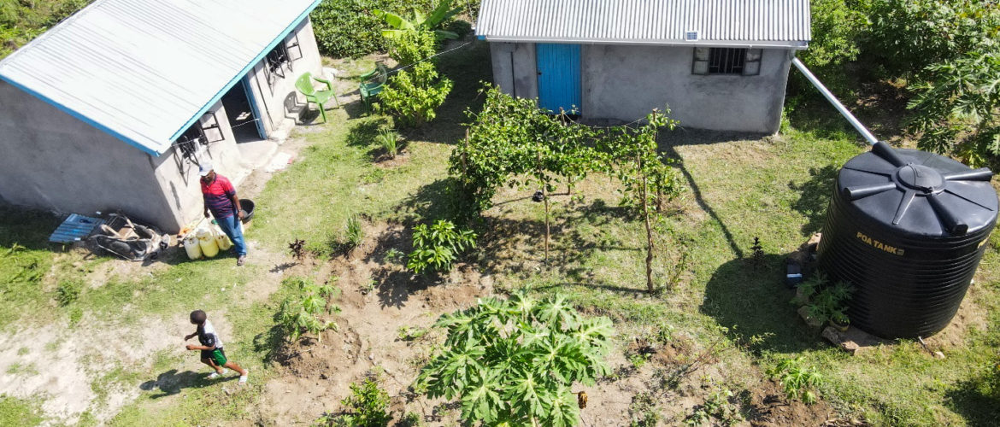

KWEPU works with communities to turn knowledge into practical action. These four featured programmes show our current direction and create clear opportunities for partners to strengthen and scale work that is already rooted in the community.

Orchard Garden & Food Sustainability
Fruit trees and food crops on Rusinga Island, supporting local food production, learning and community resilience.
Ubuntu Poultry Farming
A revolving-fund model that began with 15 women and supports poultry skills, food security and self-reliance.
Tailoring & Textile Skills
Practical training for women and young people in clothing, school uniforms and reusable sanitary towels.
Kitchen Garden Initiative
Household food production close to home, with water access identified as the key challenge to wider scale.
MAKE RUSINGA GREEN
Tree nursery, environmental education and planting with schools, young people and communities.
A connected community-development approach
These programmes are not isolated activities. Poultry can strengthen household food security and livelihoods; kitchen gardens support nutrition and resilience; tailoring develops productive skills and local production; and tree growing builds environmental responsibility and climate resilience. Across the portfolio, KWEPU emphasizes practical knowledge, community ownership and sustainability.
Partner with KWEPU
We welcome development, technical, institutional and community partners interested in strengthening proven local initiatives and responsibly expanding their reach.
Start a conversation